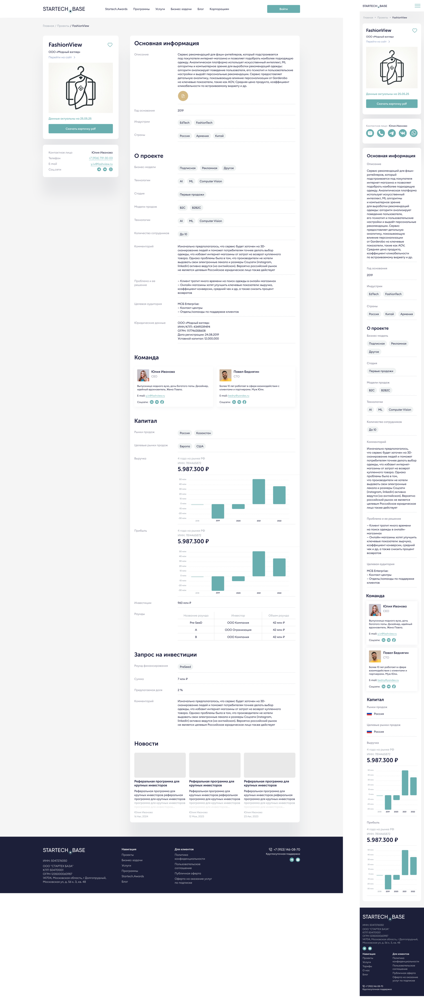
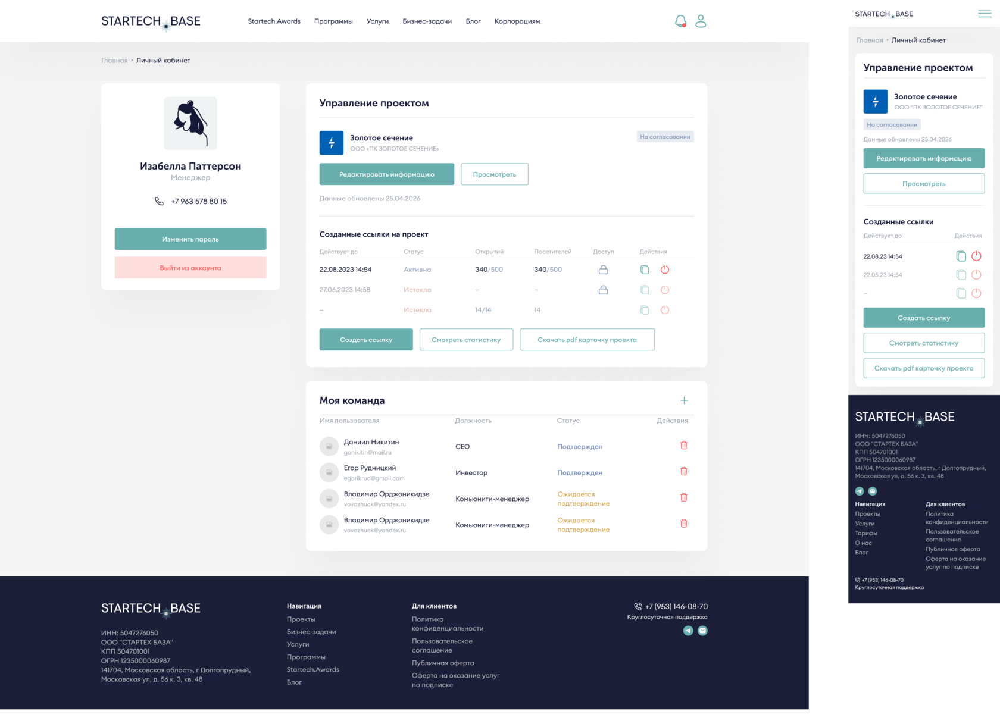

Анкета стартапа как инструмент внешней коммуникации
Как мы превратили профиль стартапа в систему распространения проектной информации
Посмотреть сайтStartech.Base — B2C-платформа для взаимодействия стартапов, инвесторов и корпораций. Это единая база технологических компаний и стартапов, где предприниматели могут размещать структурированную информацию о своём продукте: описание команды, технологии, бизнес-модели, стадии развития, кейсы и другие данные, важные для потенциальных инвесторов и партнёров.
Для стартапов регистрация и размещение информации бесплатны.
Инвесторы и корпорации используют платформу для поиска проектов для инвестиций или технологических решений под бизнес-задачи. Для них предусмотрены разные уровни доступа — от базового поиска по базе до расширенных тарифов с персональным сопровождением и доступом к более детальной информации о проектах, включая индивидуальный скаутинг.
коротко
Мы разработали систему шеринга карточки проекта, которая превратила внутреннюю анкету стартапа в инструмент внешней коммуникации с инвесторами, партнёрами и акселераторами.
моя роль и вклад в проект
Я работала единственным дизайнером на этапе post-MVP и отвечала за продуктовый дизайн ключевых направлений платформы.
В рамках этого кейса я:
— спроектировала концепцию карточки проекта и сценарии её использования
— разработала UX системы генерации и управления ссылками
— спроектировала публичную страницу проекта
— переработала структуру анкеты стартапа, адаптировав её под использование в режиме просмотра
— спроектировала модуль управления ссылками в личном кабинете
— участвовала в формировании логики доступа, приватности и ограничений
контекст и проблематика
Изначально анкета стартапа использовалась только внутри платформы как профиль для поиска инвестиций и технологических решений. При этом в продукте уже существовал большой объём качественно структурированных данных о проектах, которые регулярно обновлялись.
Проблема заключалась в том, что за пределами платформы стартапам всё ещё приходилось:
— собирать отдельные презентации
— поддерживать актуальность pitch deck’ов вручную
— дублировать информацию в разных форматах
— отправлять неактуальные версии материалов инвесторам и партнёрам
Дополнительно на рынке появился спрос на инструменты распространения проектной информации после ухода части зарубежных сервисов. Мы увидели возможность использовать уже существующую структуру платформы как основу для нового пользовательского сценария.
решение и концепция
Мы решили не создавать отдельный конструктор презентаций, а переиспользовать уже существующую структуру анкеты стартапа. На её основе мы спроектировали публичную карточку проекта, которую можно отправить по ссылке без регистрации. Карточка стала альтернативным представлением профиля стартапа вне платформы.

личный кабинет
Для управления карточками проектов я спроектировала отдельный модуль внутри личного кабинета стартапа.
Он включает список активных ссылок, управление доступами и статистику просмотров.
Пользователь может:
— генерировать уникальную ссылку на проект
— управлять доступом к карточке
— ограничивать срок действия ссылки
— ограничивать количество просмотров
— выгружать PDF-версию проекта
— отслеживать просмотры страницы
Также проект можно было не публиковать в открытой базе, сохраняя приватность.

результат
Мы превратили внутреннюю анкету стартапа в инструмент внешней коммуникации, который расширил сценарии использования платформы за пределы поиска инвестиций и стал дополнительной ценностью для пользователей Startech.Base.